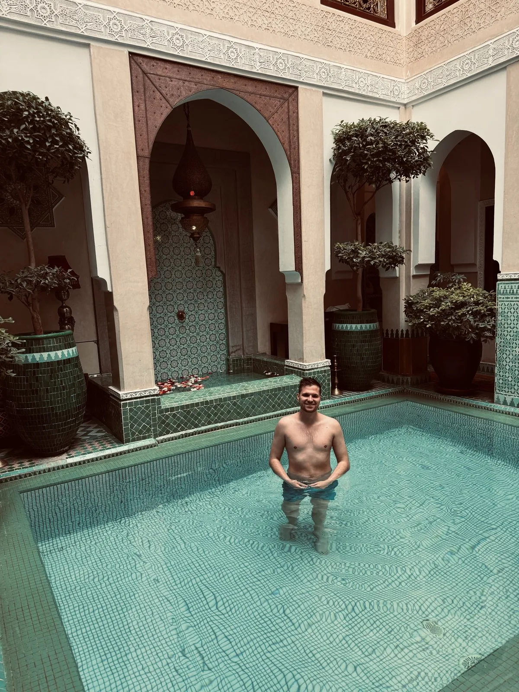
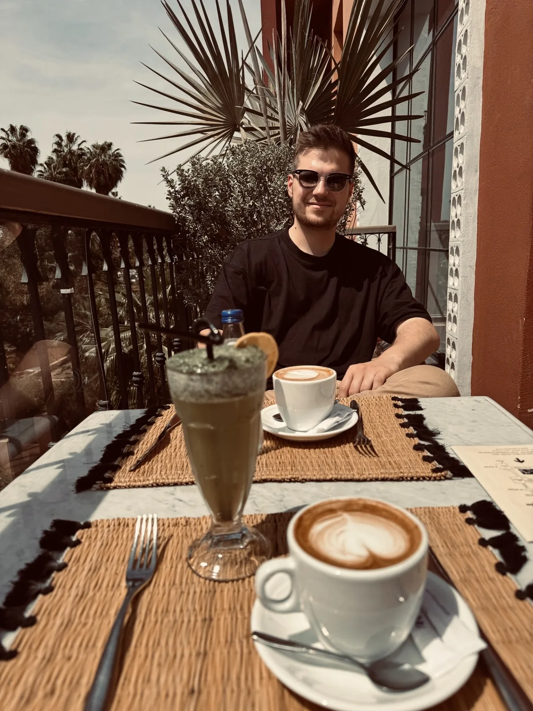
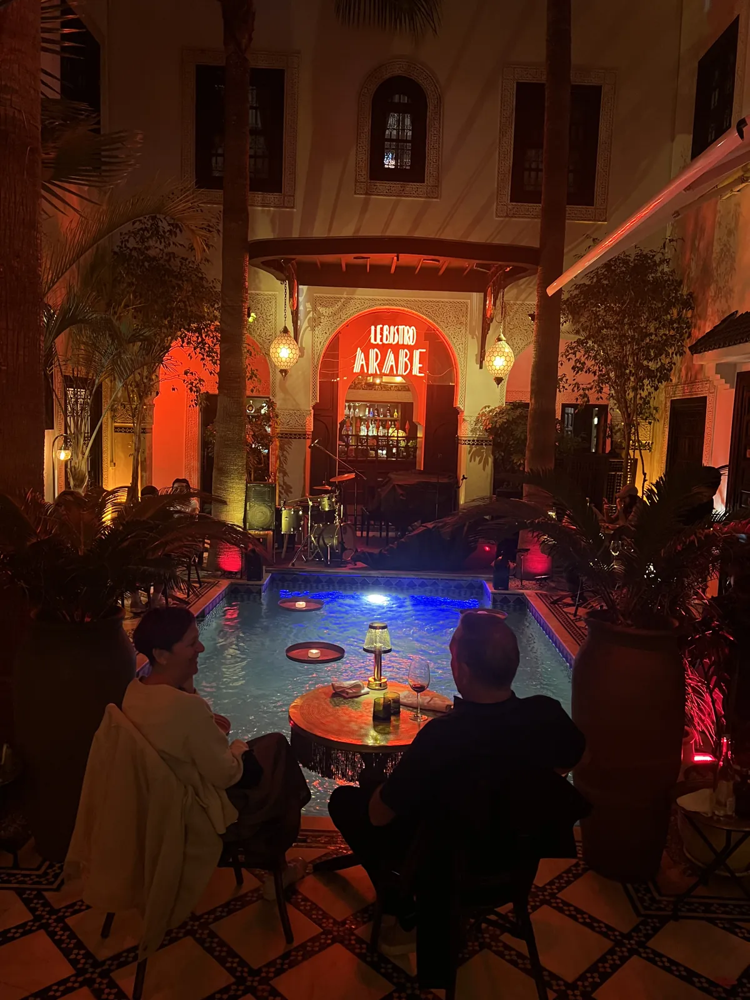

🇲🇦 Marrakesch Guide: 13 Orte – Riad, Djemaa el-Fna, Majorelle, Souks & Hidden Gems

Inhaltsverzeichnis
Marrakesch ist laut, bunt und anstrengend – und dann gehst du durch eine unscheinbare Tür und stehst in einem Riad. Preise und Zeiten sind Richtwerte (Stand 2026).
Meine Story in Marrakesch
Ich war im April 2025 dort, und dieser Wechsel zwischen Chaos und Ruhe ist das, was bleibt. Stille, ein Pool im Innenhof, Fliesen in allen Farben, Pflanzen in großen Töpfen. Tagsüber ein Sprung in den Pool, mittags Kaffee und ein Shake auf einer Terrasse unter Palmen. Abends ein Innenhof im Kerzenlicht, das Wasser im Pool leuchtet, die Gespräche werden leiser. Draußen tobt die Medina – drinnen bekommst du davon kaum etwas mit. Mein Tipp: Schlaf im Riad, nicht im Hotelklotz am Stadtrand.
Dieser Guide enthält Werbe-Links (GetYourGuide, Omio). Wenn du darüber buchst, bekomme ich eine kleine Provision – du zahlst keinen Cent mehr. Preise und Öffnungszeiten ändern sich – vor dem Besuch kurz prüfen.
🆓 Kostenlos erleben
5 Orte in Marrakesch, die du ohne Eintritt oder komplett gratis erleben kannst (bei manchen kostet nur ein Teil, z. B. Turm oder Museum):
Auf einen Blick
So kommst du hin und herum
Marrakesch hat einen internationalen Flughafen mit Taxi- und Busverbindung in die Medina; Preise vorher klären. Innerhalb der Medina gehst du zu Fuß.
Der Flughafen Marrakesch-Menara liegt rund 6 Kilometer vom Zentrum entfernt; Taxis und Transfers fahren in die Medina (Preis vorher aushandeln oder über Riad abholen lassen). Autos kommen in der Medina nicht weit; Riad-Betreiber holen Gäste meist an einem Tor ab. Aktuelle Einreise- und Währungsregeln (Marokkanischer Dirham) vorher prüfen.
In der Medina gehst du zu Fuß; für längere Strecken nimmst du ein Taxi und vereinbarst den Preis vorher.
1. Must-Sees
Riad mit Pool💎 Hidden Gem


Djemaa el-Fna🆓 Kostenlos erlebbar
Nur ein paar Minuten zu Fuß entfernt: abends Garküchen, Musiker, Geschichtenerzähler, ein einziges Gewusel. Seit 2001 immaterielles UNESCO-Kulturerbe – wegen der Menschen, nicht wegen eines Gebäudes. Zum Sonnenuntergang auf eine Dachterrasse darüber.
Der Djemaa el-Fna ist der Hauptplatz der Medina und ein einziges Schauspiel: Tagsüber Saftstände, Schlangenbeschwörer und Henna-Malerinnen, abends bauen Dutzende Garküchen ihre Stände auf, Rauch steigt auf, Musiker und Geschichtenerzähler sammeln Zuschauer. Seit 2001 gehört der Platz zum immateriellen UNESCO-Kulturerbe.
Frag bei Garküchen nach dem Preis, bevor du bestellst, und geh dorthin, wo Einheimische sitzen. Mit Fotos von Schlangenbeschwörern wird Geld verlangt; kläre das vorher. Behalte Taschen im Blick.
Tipp: Komm zum Sonnenuntergang auf eine Dachterrasse und iss dann unten.
Jardin Majorelle
Morgens, bevor es voll wird. Mein Tipp: Tickets online buchen und früh kommen.
Der Jardin Majorelle ist ein Garten mit kobaltblauen Gebäuden, Kakteen, Bambus und Palmen, den der Maler Jacques Majorelle anlegte und später Yves Saint Laurent und Pierre Bergé retteten. Das berühmte „Majorelle-Blau“ gibt dem Ort seine Wirkung. Im Garten befindet sich auch das Berbermuseum.
Kaufe Tickets online und komm morgens zur Öffnung, denn der Garten füllt sich schnell. Das benachbarte Yves-Saint-Laurent-Museum ist ein eigener Besuch wert (Preise und Zeiten vorher prüfen).
Tipp: Online-Ticket buchen und zur Öffnung kommen.
Bahia-Palast
Der Bahia-Palast stammt aus dem späten 19. Jahrhundert und wurde für einen Großwesir gebaut. Er besteht aus Innenhöfen, Gärten, bemalten Zedernholzdecken, Zellige-Mosaiken und stuckverzierten Räumen. Du gehst von Hof zu Hof und bekommst ein Gefühl für marokkanische Handwerkskunst.
Komm früh am Morgen, um Gruppen zu vermeiden. Eintritt und Öffnungszeiten vorher prüfen. Plane etwa eine Stunde ein.
Tipp: Komm früh, bevor die Reisegruppen eintreffen.
Saadier-Gräber
Die Saadier-Gräber stammen aus dem 16. Jahrhundert und wurden erst 1917 wiederentdeckt. Der Mausoleumsraum mit zwölf Marmorsäulen und kunstvollen Stuckdecken ist beeindruckend; im Garten liegen weitere Gräber. Der Besuch ist kurz, aber sehenswert.
Die Schlange kann lang sein – komm früh oder spät. Preise und Zeiten vorher prüfen.
Tipp: Komm früh oder kurz vor Schluss.
Koutoubia-Moschee🆓 Kostenlos erlebbar
Das Minarett der Koutoubia-Moschee aus dem 12. Jahrhundert ist das Wahrzeichen von Marrakesch und überragt die Medina. Nichtmuslime dürfen die Moschee nicht betreten, aber die Gärten und das Minarett sind von außen schön, vor allem im Abendlicht.
Das Minarett diente als Vorbild für andere Bauwerke der Region. Spaziere abends durch die Gärten.
Tipp: Geh abends durch die Gärten, wenn das Licht warm ist.
Hammam erleben
Ein Hammam gehört zu Marokko: Dampfbad, Schwarze Seife (Savon Noir), Peeling mit einem Handschuh und eine Massage. Es gibt einfache, traditionelle Hammams für Einheimische und luxuriöse in Riads und Hotels. Die Preise unterscheiden sich stark; kläre vorher, was enthalten ist.
Nimm Badekleidung mit (frag, was üblich ist) und plane etwa ein bis zwei Stunden. Es ist eine entspannende Pause vom Trubel der Medina.
Tipp: Frag vorher nach Preis und Ablauf.
2. Hidden Gem
Souks ohne Plan💎 Hidden Gem🆓 Kostenlos erlebbar
Le Jardin Secret & stille Medina-Gärten💎 Hidden Gem
Le Jardin Secret ist ein restaurierter Palastgarten mitten in der Medina, mit Brunnen, Pavillons und einem Turm mit Aussicht. Er ist ruhiger als die bekannteren Gärten und eine gute Pause zwischen den Souks. Ein Café gibt es auch.
Der Eintritt ist kostenpflichtig; Preis und Öffnungszeiten vorher prüfen.
Tipp: Nimm dir eine Pause im Café des Gartens.
Menara-Gärten💎 Hidden Gem🆓 Kostenlos erlebbar
Die Menara-Gärten sind ein weitläufiger Olivenhain mit einem großen Wasserbecken und einem Pavillon, hinter dem sich bei klarem Wetter das Atlasgebirge zeigt. Sie sind ruhig und eignen sich gut für einen Spaziergang am Nachmittag.
Der Eintritt zum Gelände ist meist günstig; Zeiten vorher prüfen. Komm am späten Nachmittag, wenn das Licht weich ist.
Tipp: Komm am späten Nachmittag, wenn das Licht weich ist.
Gerberviertel & Handwerksgassen💎 Hidden Gem🆓 Kostenlos erlebbar
Im Osten der Medina liegen Gerbereien, in denen Leder nach traditioneller Art bearbeitet wird. In den Handwerksgassen findest du Schmiede, Färber, Teppichweber und Lampenmacher. Es riecht stark, und Führer bieten ihre Dienste an; vereinbare den Preis vorher oder geh ohne Führer.
Ein Besuch gibt Einblick in das Handwerk, das die Medina prägt. Trage feste Schuhe und nimm ein Tuch mit.
Tipp: Vereinbare den Preis vorher oder geh allein.
Tagesausflug: Atlasgebirge, Ourika-Tal & Essaouira💎 Hidden Gem
Das Ourika-Tal liegt rund 60 Kilometer von Marrakesch entfernt und führt in die Berge des Hohen Atlas: Wasserfälle, Berberdörfer und kühlere Luft. Alternativ fährst du in etwa zweieinhalb bis drei Stunden nach Essaouira, einer Hafenstadt am Atlantik mit weißer Altstadt und Fischmarkt. Beide Ausflüge sind per Tour oder Mietwagen möglich.
Prüfe Anbieter und Preise vorher und plane einen vollen Tag ein. Nimm Wasser, Sonnenschutz und eine Jacke mit.
Tipp: Plane einen vollen Tag und vergleiche Anbieter.
Tajine, Couscous & Minztee
Die marokkanische Küche: Tajine (Schmorgericht im Tontopf, etwa mit Lamm und Pflaumen oder Huhn mit Zitrone und Oliven), Couscous (traditionell freitags), Pastilla (Blätterteig mit Taube oder Huhn und Mandeln) und süßer Minztee. Probiere auch frisch gepressten Orangensaft auf dem Platz.
Frag auf Speisekarten nach Preisen und iss in Lokalen, in denen Einheimische sitzen. Preise ändern sich; frag vorher.
Tipp: Iss dort, wo Einheimische sitzen, und frag nach Preisen.
Was Marokko ausmacht
Minztee, den man hier „Berber-Whisky“ nennt, Souks, in denen Feilschen dazugehört, und eine Kultur, in der Arabisch, Amazigh und Französisch nebeneinander stehen. Die Mauern aus rotem Lehm machen Marrakesch zur „Roten Stadt“. Gegründet wurde sie 1070 von den Almoraviden; das Minarett der Koutoubia-Moschee darf bis heute von keinem Gebäude in der Medina überragt werden.
📍 Diesen Guide in Google Maps speichern
1. Schnell: Route öffnen
2. Dauerhaft: als eigene Karte (3 Minuten)
- Lade die Ortsliste herunter (CSV).
- Öffne Google My Maps → „Neue Karte erstellen“ → „Importieren“ → Datei auswählen.
- Als Position die Spalte „Ort“, als Titel „Name“ wählen – fertig.
- In der Google-Maps-App findest du die Karte unter „Gespeichert“ → „Karten“, auch unterwegs.
⬇️ Ortsliste herunterladen (CSV)
3. Einzeln speichern
Dein Plan
Tag 1: Zwei Tage in Marrakesch
- Morgens – Jardin Majorelle zur Öffnung, YSL-Museum
- Mittag – Tajine, Pause im Riad-Pool
- Nachmittag – Bahia-Palast, Saadier-Gräber, Souks
- Abend – Sonnenuntergang über dem Djemaa el-Fna, Garküchen
- Tag 2 – Hammam, Le Jardin Secret oder Ausflug ins Ourika-Tal
Häufige Fragen
Riad oder Hotel?
Noels Tipp: Riad in der Medina.
Wie viele Tage braucht man in Marrakesch?
Ist Marrakesch für Touristen sicher?
🗺️ Alle Orte auf meiner Karte → Mehr Guides und Reels auf Instagram: @hiddengem.atlas
Guide teilen: Per WhatsApp